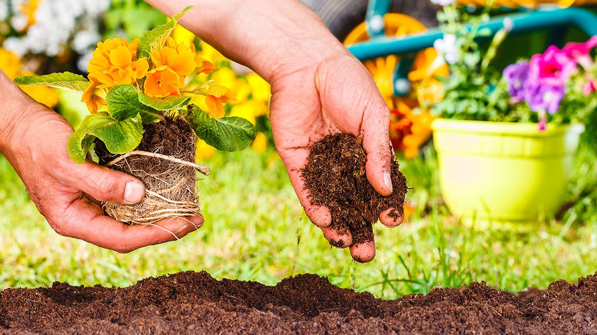
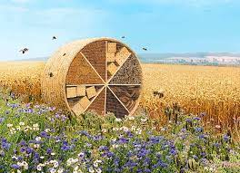
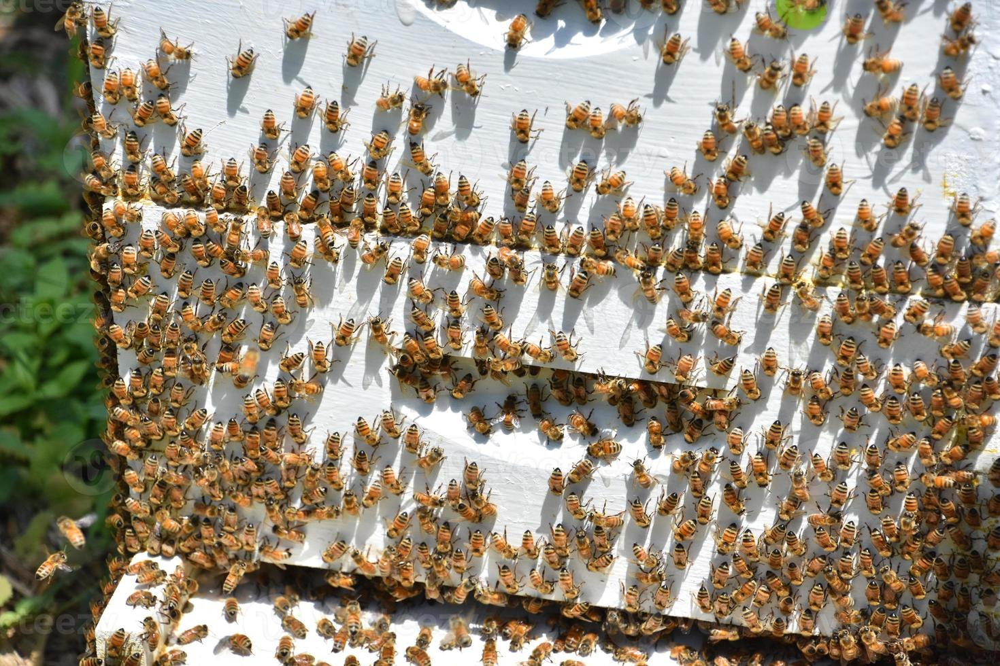
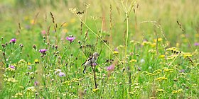

Sanchez Rangel Maria Fernanda
What can we do to preserve bees?
- Plant nectar-bearing flowers, such as marigolds or sunflowers, for decorative
purposes on balconies, terraces and gardens.
- Make children and adolescents aware of the importance of bees.
- Set up a pollinator farm on your balcony, terrace or garden.
- Cut the grass in the meadows only when the nectar plants have finished flowering.



